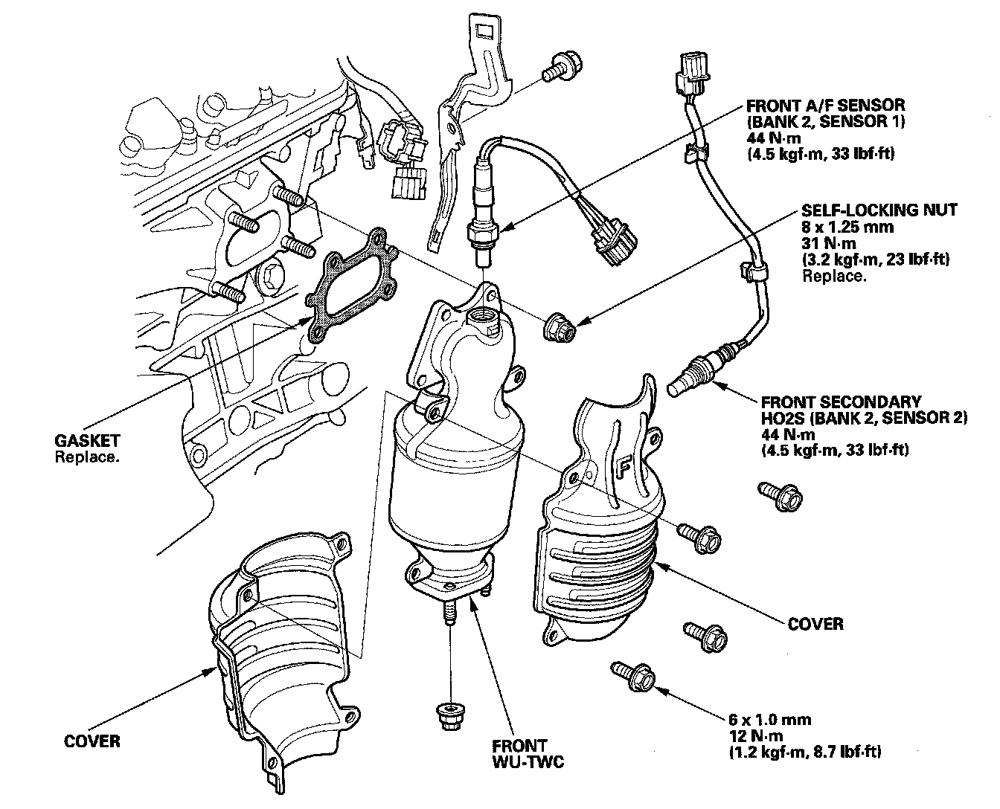
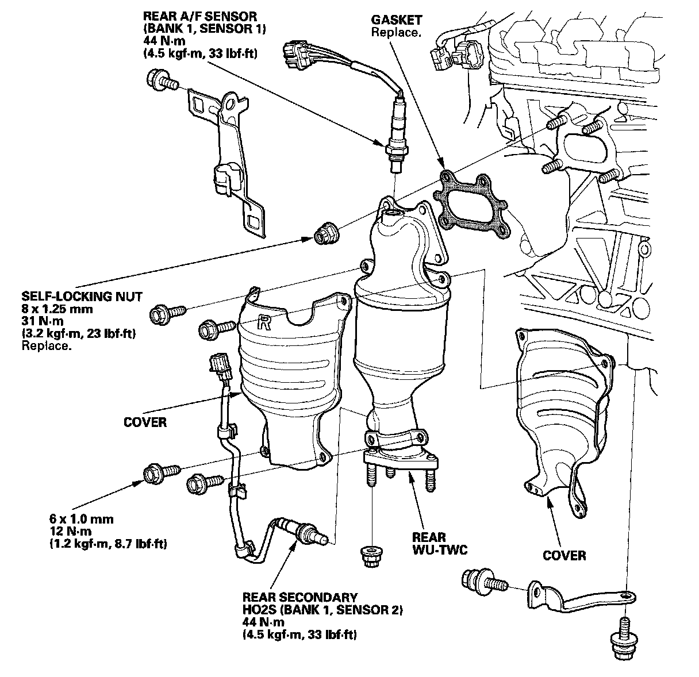

Warm Up TWC
Warm Up TWC Removal/InstallationFRONT
1. Remove the radiator and A/C condenser fan assemblies.
2. Disconnect the front air fuel ratio (A/F) sensor connector and front secondary heated oxygen sensor (secondary HO2S) connector.

3. Carefully remove the front WU-TWC.
4. Carefully install the front WU-TWC, and tighten the nuts in a crisscross pattern in two or three steps.
5. Install the parts in the reverse order of removal.
REAR
1. Remove exhaust pipe A.
2. Remove the intermediate shaft.
3. Disconnect the rear air fuel ratio (A/F) sensor connector and the rear secondary heated oxygen sensor (secondary HO2S) connector.

4. Remove the rear WU-TWC bracket, then remove the rear WU-TWC.
5. Install the rear WU-TWC, and tighten the nuts in a crisscross pattern in two or three steps.
6. Install the parts in the reverse order of removal.